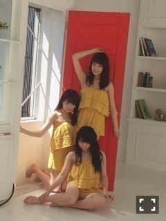
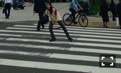
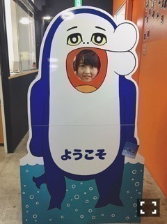

| 2016/07 11 Mon | 掃除日。726回目 |
最後の2ndアルバム握手会
来てくださったみなさん
ありがとうございました！！
1部 命は美しい
2部 ポピパッパパー
3部 今、話したい誰かがいる
4部 不等号
5部 嫉妬の権利
この日の乃木のので
井上小百合と私のユニット曲
「行くあてのない僕たち」
が初解禁されました。
5部に直接感想を聞けて嬉しかった！
BOMB発売中


美彩と真夏と3人で
オムライスの卵の部分になりました！
この組み合わせって斬新*\(^o^)/*
ふたりともセクシーだった*\(^o^)/*
他に載ってたメンバーのグラビアも
めっちゃ可愛かったです。

STUDYというファッション雑誌の別冊に
載せていただきます*\(^o^)/*
贅沢に一冊まるごと伊藤万理華になります。
カメラマンは伊丹豪さんです。
STUDY Extra Issue with Go Itami and Marika Ito 〜Free All Angels〜
（冊子、写真、ポストカードがセットで付いています）
■値段
￥2,000
■7月15日（金）12時〜7月17日（日）21時 @STUDY展
（東京都渋谷区富ヶ谷 1-8-5）
■7月15日（金）12時〜@STUDY公式オンライン
今月号のMdN、連載のお相手は
映像作家のAC部さんです！
違和感を感じる特徴的なアニメーション。
だけど引き込まれるのです。
なんでこんなに面白いんだろう
の秘密がわかりました！

group_inouさんのPVに登場する
だいすきなイルカのイルカくん！
真顔とこの顔しか撮ってなかった*\(^o^)/*
まりか
コメント(544)
2016/07/11 22:12